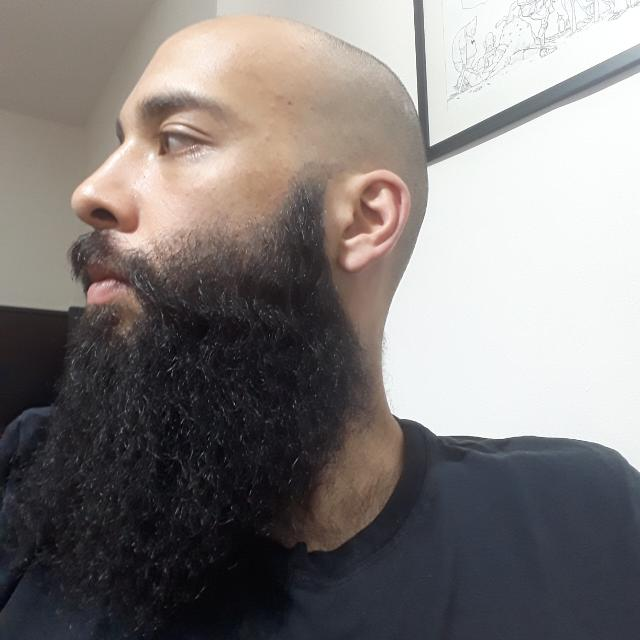
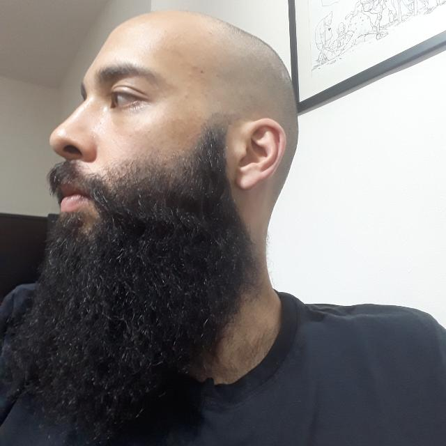

Pessoa 1 tem um grande conhecimento das Hard Skills aprendidas, sempre respondendo as dúvidas das demais pessoas.
Pessoa 2 é muito animada e está sempre participando das aulas, além de incentivar as demais pessoas nas treads do Slack!
Pessoa 3 nos contou que está com dificuldade em acompanhar os conteúdos e que precisa estudar de 2 a 3 horas além do tempo estipulado pela agenda da Trybe. Sua resiliência é um exemplo para a turma!
Pessoa 4 demonstra grande facilidade para assimilar os conteúdos de Soft Skills, usando uma comunicação assertiva e sempre dando dicas de Autogestão, compartilhando a organização de sua rotina.
Pessoa 5 gosta muito de gatos e tem alguns em sua casa. Na sua câmera, sempre vemos um deles passeando pelo espaço!
Google